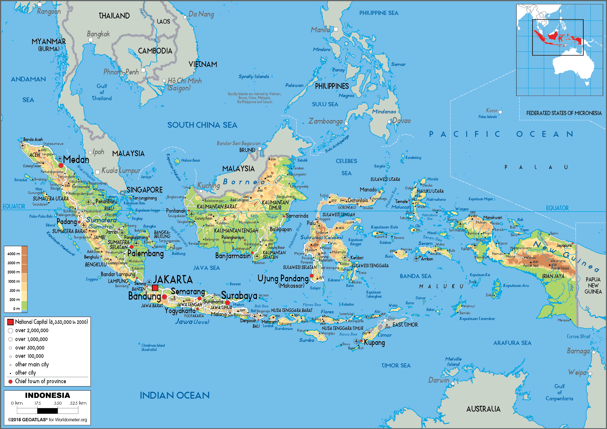

info gempa
memberikan informasi tentang gempa mulai dari lokasi gempa, skala gempa dan dampak gempa
| NO | Lokasi | Skala | Dampak |
|---|
memberikan informasi tentang gempa mulai dari lokasi gempa, skala gempa dan dampak gempa
| NO | Lokasi | Skala | Dampak |
|---|